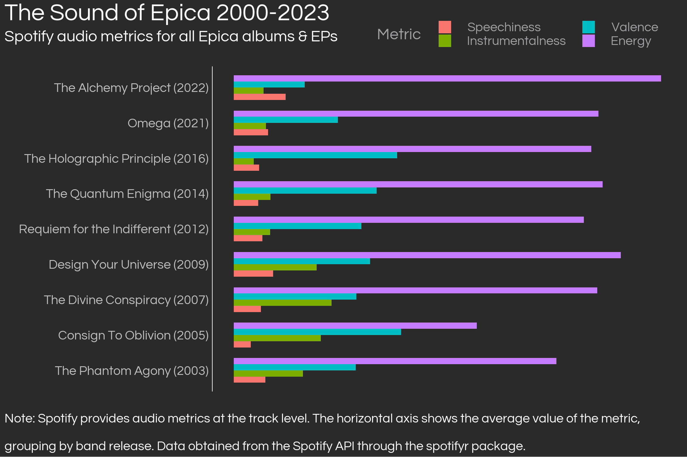
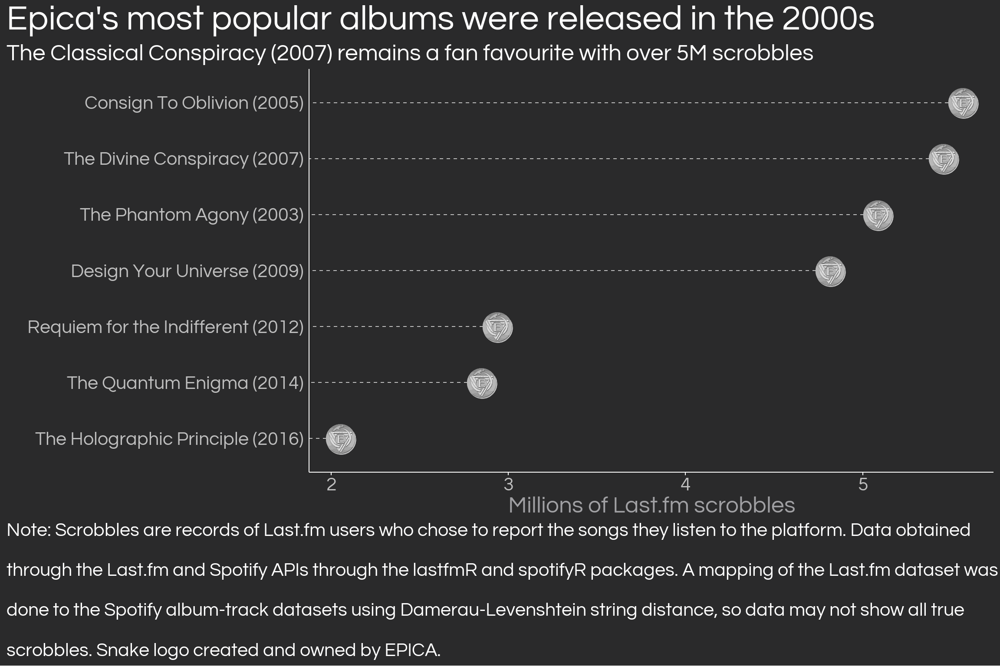
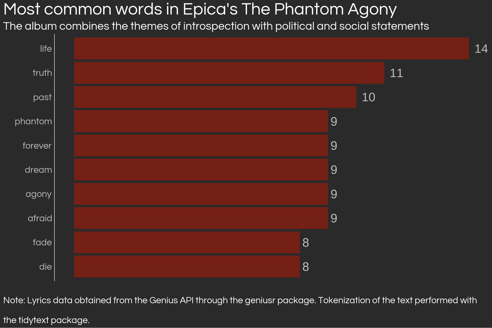
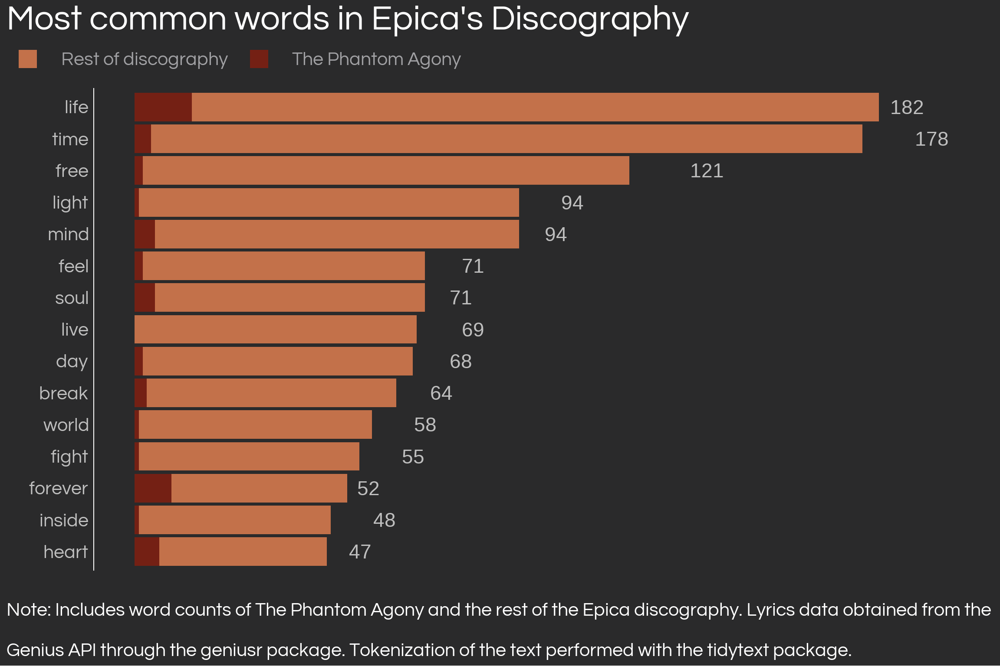

As a (late) tribute to Epica’s The Phantom Agony twentieth birthday, I analyse Epica’s empirics by accessing the Genius, Last.fm and Spotify application programming interfaces (APIs) with R to analyse the Dutch band’s musical features, streams and lyrics. Cover picture by Diego Eivar.
english
music
text analysis
data viz
epica
metal
Author
Daniel Sánchez
Published
June 17, 2023
Epica could record an album of Karol G covers and no one would bat an eye - Last Rites, 2022
On June 5th, 2003, dutch-based symphonic metal band Epica released their first full-length album, The Phantom Agony, the first of eight albums on the band’s successful trajectory in the metal scene. Twenty years after, Epica is alive and kicking after having released a full-length album in 2021, Omega, an EP in 2022, The Alchemy Project, and were headliners of Metallica’s M72 2023 World Tour concerts in Europe. Epica’s lengthy trajectory make the band a great case study about how death/symphonic metal has adapted to the modern stream-based music industry. In this post, yours truly uses API data from Genius, Last.fm and Spotify to look at the empirics behind Epica’s discography, with an emphasis on The Phantom Agony.
What makes Epica different?
Epica is unique. Though that is something that any die-hard fan will tell you about their favourite band, Epica has several differencing factors which make them stand out in the genre. The band combines gutural growls from death metal with soprano vocals and string orchestras. This notable musical style was first heard in The Phantom Agony, after Dutch guitarist and singer Mark Jansen left After Forever and founded Epica with dutch singer Simone Simons.
To look at how Epica has constructed its musical features, we can use Spotify-calculated audio features, which rank songs based on energy, danceability, valence, among others [1]. The Spotify API can be accessed with R through the spotifyr package, but it needs users to create a Spotify Developer account and request a Client ID and a Client Secret. For a comprehensive tutorial on how to do this, see this tutorial.
Once having acquired the credentials, set them up as system environment variables through a call to Sys.setenv(SPOTIFY_CLIENT_ID = 'something') and Sys.setenv(SPOTIFY_CLIENT_SECRET= 'something'). Having these as system variables make the code less clunky and faster. Further, since we’re going to access data from Epica, it’s useful to set up the Spotify identificator for the band, which can be found in the Spotify artist’s link, after the artist/ and before the interrogation sign ?. With that, we can acquire all albums from Epica available in Spotify, as well as audio metrics per track. The data requires quite a bit of preparation for ggplot2 graphics, but trust me, it’s worth it. Below, I acquire track-level audio metrics and then group at the album level1 by taking averages of all metrics.
Tip
You can display the code which generated the graphs using the down arrow in the code blocks.
Code
# Setup the access tokenaccess_token <-get_spotify_access_token(client_id =Sys.getenv('SPOTIFY_CLIENT_ID'),client_secret =Sys.getenv('SPOTIFY_CLIENT_SECRET'))# Define an album/EPs vector, a year vector, to use later as well as the artist idepica_spotify_id <-'5HA5aLY3jJV7eimXWkRBBp'epica_releases_year <-data.frame(release_spotify =c("The Phantom Agony (Expanded Edition)", "Consign To Oblivion (Expanded Edition)", "The Divine Conspiracy", "Design Your Universe", "Requiem for the Indifferent", "The Quantum Enigma", "The Holographic Principle","The Solace System", "Omega", "The Alchemy Project"),release_name =c("The Phantom Agony", "Consign To Oblivion", "The Divine Conspiracy","Design Your Universe", "Requiem for the Indifferent", "The Quantum Enigma","The Holographic Principle","The Solace System", "Omega", "The Alchemy Project"),release_year =c(2003, 2005, 2007, 2009, 2012, 2014, 2016, 2017, 2021, 2022)) %>%mutate(release_name_year =paste(release_name,' ', '(', release_year, ')', sep =''))# Get metrics at the track level and filter for the selection of releases I choseepica_track_metrics <-get_artist_audio_features(epica_spotify_id, include_groups =c('album', 'single')) %>%select(track_name, album_name, album_id, energy, loudness, speechiness, acousticness, instrumentalness, liveness, valence, tempo) %>%filter(album_name %in% epica_releases_year$release_spotify) # Group at the album level, reshape to long form, then plotepica_album_metrics <- epica_track_metrics %>%group_by(album_name) %>%summarise_if(is.numeric, mean) %>%left_join(epica_releases_year, by =c('album_name'='release_spotify')) %>%arrange(desc(release_year)) %>%select(-album_name) %>%mutate(loudness =abs(loudness)) %>%relocate(release_name, release_name_year, release_year) %>%gather(metric, value, energy, loudness, speechiness, acousticness, instrumentalness, liveness, valence, tempo)# Create an ordering for my metricsorderings <-data.frame(metric =c('energy', 'valence', 'instrumentalness', 'speechiness'),order =c(4,3,2,1) )# Graphepica_album_metrics %>%filter(metric %in%c('energy', 'valence', 'instrumentalness', 'speechiness')) %>%left_join(orderings, by ='metric') %>%mutate(metric =factor(str_to_sentence(metric))) %>%ggplot(aes(reorder(release_name_year, release_year), value, fill =reorder(metric, order))) +geom_col(width =0.7, position =position_dodge(width =0.7)) +coord_flip() +labs(title ='The Sound of Epica 2000-2023',subtitle ="Spotify audio metrics for all Epica albums & EPs \n",y ='',x ='',caption =str_wrap('Note: Spotify provides audio metrics at the track level. The horizontal axis shows the average value of the metric, grouping by band release. Data obtained from the Spotify API through the spotifyr package.', 120),fill ='Metric') + theme_daniel +theme(axis.text.x =element_blank(),axis.text.y =element_text(colour ='gray'),legend.position =c(0.65, 1.10), legend.margin =margin(0),legend.direction ='horizontal') +guides(fill =guide_legend(nrow =2))

Epica’s characteristic sound, which meddles the harmonious verses by the female lead with violent male growls was born in a single, Cry for the Moon released 2003 and also included in their first album. Cry for the Moon remains as one of Epica’s most important tracks, as it set the scene for the what was to come later. Curiously, this first album is not the most instrumental of them all, ranking fourth in terms of instrumentalness. The most instrumental release by Epica is actually Consign to Oblivion (2005), often considered as the band’s magnum opus, followed by 2016’s The Holographic Principle. The data also shows an apparent trade-off between energy and instrumentality, an intuitive idea which is only challenged by the unique Design Your Universe (2009) with both high instrumentality and energy, which in my view marked the difference between the modern and the classical Epica. This last release contained the unforgettable Unleashed, probably Epica’s most mainstream track so far.
Somewhat of a pattern can be found in the band’s last two releases: the instrumentality fades, apparently in favour of more energy. Is this the way that Epica makes its way into today’s hyper competitive and commercial music industry? A question like this has no clear answer (and perhaps does not deserve one), but the strategy here might be one of making a subtle impact. With newer releases which are friendler to the unexperienced listeners, Epica subtly enters the scene to the create an obsessive devotion after the innocent streamer turns to mindless fanatic after listening to the band’s more loyal records of old.
An attempt at stream analysis with Last.fm scrobbles
What comes to one’s mind when reading about music data analysis it is easy to automatically jump towards streams. With today’s stream-based music industry, data on music preferences must be infinitely better than whatever it used to be some decades ago. However, two problems arise with stream data. The first and most mundane is that stream data is not easily accesible, probably due to the proprietary nature of the platforms that collect such data (and perhaps its business value?). The second and more metaphysical issue with stream analysis is that, even though I am not a professional musician myself, I am pretty sure that no serious artist writes their music based on data (and they shouldn’t). If you’re not going to see Mark Jansen and Simone Simons sit down in front of a double screen display to look at a Power BI dashboard, why bother with all this?
My answer is because we can, or at least because there’s an attempt to be made, and it aids the non-professional musician’s understanding of the world of music. And while you won’t see Mark Jansen trying to deploy a dockerised Shiny app, you will see him sitting down reading scientific literature to write lyrics [2]. Epica’s inspiration on scientific knowledge for their lyrics allows for a scientific approach when trying to understand their music. As a student of social science, using data to understand the world is my best attempt at such type of knowledge.
Having that in mind, in this section I present an attempt at stream analysis with publicly available stream data from Last.fm. Last.fm is an online platform which tracks data from users through scrobbling, a way to “scrape” the data from music platforms and native media players and upload it to the user’s Last.fm account. A listener, whoever, needs to self-select into creating a Last.fm account and connecting their streaming websites or computer’s native media players to Last.fm. This data becomes publicly available to compute recommendations and compatibility analyses for the users. While it certainly leaves out an important chunk of the population: all of those who don’t use Last.fm, which might create significant selection bias, this is better than nothing at all.
By using the lastfmR from Piotr Patrzyk2, which connects to the last.fm API, I can pull data from all Last.fm users who have scrobbled Epica.
Code
# Get all tracks scrobbled and clean up the track names as they are *very* dirty# This will remove all of the "part" words from the track names, which are pretty commonremove_parts<-c('pt 1', 'pt 2', 'pt 3', 'pt 4', 'pt 5', 'pt 6', 'pt 7', 'pt 8', 'pt 9', 'pt 10', 'pt 11', 'pt 12', 'pt 13', 'pt 14', 'pt 15','pt1', 'pt2', 'pt3', 'pt4', 'pt5', 'pt6', 'pt7', 'pt8', 'pt9', 'pt10', 'pt11', 'pt12', 'pt13', 'pt14', 'pt15','part 1', 'part 2', 'part 3', 'part 4', 'part 5', 'part 6', 'part 7', 'part 8', 'part 9', 'part 10', 'part 11', 'part 12', 'part 13', 'part 14', 'part 15','part1', 'part2', 'part3', 'part4', 'part5', 'part6', 'part7', 'part8', 'part9', 'part10', 'part11', 'part12', 'part13', 'part14', 'part15', 'part','part i', 'part ii', 'part iii', 'part iv', 'part v', 'part vi', 'part vii', 'part viii', 'part ix', 'part x', 'part xi', 'part xii', 'part xiii', 'part xiv', 'part xv','01', '02', '03', '04', '05', '06', '07', '08', '09', '10', '11', '12', '13', '14', '15', '17', '18', '19', '20', '21', '22', '23', '24', '25', '26', '27', '28', '29', '30', '1', '2', '3', '4', '5', '6', '7', '8', '9', '0')epica_tracks_lastfm <- lastfmR::get_tracks('Epica') %>%mutate(track_clean =clean_strings(track, remove_char = remove_parts))# Group by track name and sum scrobbles to later join with the spotify datatrack_scrobbles <- epica_tracks_lastfm %>%group_by(track_clean) %>%summarise(scrobbles =sum(scrobbles)) %>%ungroup() %>%mutate(track_clean =clean_strings(track_clean, remove_char = remove_parts),live =if_else(track_clean %>%str_like('%live%'), 'live', 'not live')) %>%filter(live =='not live', track_clean !=' ',!is.na(track_clean),!(track_clean %in%c('i', 'ii', 'iii', 'iv', 'v', 'vi', 'viii', 'viii', 'ix', 'x')))# Inner join the songs dataset from lastfm to spotify track metrics based on "clean" track namesepica_tracks <- epica_track_metrics %>%transmute(track_name, album_name, album_id,track_clean =clean_strings(track_name, remove_char = remove_parts)) %>%inner_join(track_scrobbles, by ='track_clean')epica_tracks_joined <- epica_track_metrics %>%transmute(track_name, album_name, album_id,track_clean =clean_strings(track_name, remove_char = remove_parts)) %>%stringdist_inner_join(track_scrobbles, by ='track_clean', method ='dl', max_dist =2,distance_col ='dist')epica_tracks %>%summarise(sum(scrobbles)) epica_tracks_joined %>%summarise(sum(scrobbles)) epica_tracks_joined %>%select(track_clean.x, track_clean.y, dist) %>%arrange(desc(dist))# Create scrobbles by album and join with the album metrics and with album table to get the yearscrobbles_by_album <- epica_tracks %>%left_join(epica_releases_year, by =c('album_name'='release_spotify')) %>%group_by(release_name_year, release_year) %>%summarise(scrobbles =sum(scrobbles)) %>%ungroup() %>%arrange(desc(release_year))

The streams were obtained using the lastfmR package, which allows to obtain the number of streams of all songs which are mapped to most artists. However, two issues exist with the use of lastfmR for performing stream analysis. First, tracks are scrobbled from users with the exact same name that they have in the user’s computer or stream platform. This is not an issue for Last.fm users who are streaming from platforms, as the track names are standard and easy to map to albums, however, for those users scrobbling from their own media players (e.g. iTunes) you will get messy track names and thus it is not possible to make perfect matches when joining the data. I used Damerau-Levenshtein string distance to perfom fuzzy joins, however, the existence of 100+ entries for the same song in the Last.fm makes it possible to only observe a portion of the scrobbles, as the API limits scrobble data to 10,000 rows.
The other issue is impossible to alleviate: we only observe a minority of stream users as probably only a small portion of all Epica listeners choose to record their listening patterns with Last.fm. All results from the analysis of this dataset could be significantly biased (which is why it is probably not worth running any kind of statistical model using this data). Access to the full dataset is likely only available to platform insiders and artists themselves, so at least any kind of advanced regression analysis is theoretically possible and useful for these parties.
Having mentioned that, the figure above shows pretty coherent results. The most listened albums are those released in the 2000s, as they’ve had more time to be scrobbled by Last.fm users. This makes sense for a non-mainstream artist like Epica, however, it is also possible that listeners appreciate the more symphonic albums, among them The Phantom Agony. Because of the small difference in scrobbles between Consign to Oblivion and The Divine Conspiracy, it isn’t possible to say which of the two is the most popular. However, with the data at hand, it is safe to say that Epica’s most popular releases were released in the previous decade, when modern metal was considerably more listened relative to the 2010s. Epica’s latest effort, The Alchemy Project, released in 2022, seems to be the weakest, however, given the short amount of time that has passed, one could expect streams to gradually increase to the same levels of the late 2010s releases.
Using the Genius API for lyric text analysis
Apart from Epica’s characteristic blend of symphony and traditional heavy metal, another element which makes the artist stand out are the lyrics. Epica’s lyrics, unlike what much of today’s lyrics, are not easily accessible: all deal with complex ideas which motivate reflection by the listener on themes prevalent on the world. Moreover, the lyrics are strongly multiligual, with a strong emphasis on the use of Latin verses, probably the most notable Epica signature to the average listener.
Apart from their artistic value, which music experters are better able to exploit than me, rich lyrics allow for extensive and awesome text analysis, but more specifically tidy text analysis. With the existence of the amazing geniusr package, text analysis of musical lyrics is almost effortless3, as it allows to seamlessly download lyrics for songs of any artist on their database. The package is well documented and has intuitive functions; for text analysis, I used the tidytext package, which helps clean the corpus of text into tokens (words) and then eliminates the typical common words (common words) to perform word counts and more sophisticated analysis.
Below, I present some code and the classic wordcloud + wordcount bar plot of The Phantom Agony’s lyrics.
Code
# Get the genius artist id for Epica using their artist search functionepica_id <-search_artist('epica') %>%select(artist_id) %>%as.vector()# Look for a track in the album to get the Genius album idcry_for_the_moon_id <-search_song('cry for the moon') %>%slice(1) %>%select(song_id) %>%as.vector()# Get data for cry for the mooncry_for_the_moon_df <-get_song_df(cry_for_the_moon_id)# Get the album id for The Phantom Agony in the data of Cry for the Moonthe_phantom_agony_id <- cry_for_the_moon_df %>%select(album_id) %>%as.vector()# Get all songs in the album and their idsthe_phantom_agony_songs <-get_album_tracklist_id(the_phantom_agony_id) %>%inner_join(get_artist_songs_df(epica_id) %>%select(song_name, song_id), by =c('song_title'='song_name'))track_ids <- the_phantom_agony_songs$song_id# Extract lyrics for all tracks and combine into a single dataframephantom_agony_lyrics <-lapply(track_ids, get_lyrics_id) %>%bind_rows() %>%slice(-1:-2)# Tokenize the lyrics and antijoin with stop wordsphantom_agony_words <- phantom_agony_lyrics %>%unnest_tokens(output = word,input = line) %>%anti_join(stop_words, by ='word')# A word count dfphantom_agony_wordcount <- phantom_agony_words %>%count(word) %>%rename(freq ='n') %>%arrange(desc(freq))# Define coloursbright_orange <-"#FFA500"# hex code for bright orangedark_red <-"#8B0000"# hex code for dark redgolden_yellow <-"#FFD700"# hex code for golden yellow# Create color palettecolor_palette <-colorRampPalette(c(bright_orange, dark_red, golden_yellow))# Generate a palette of 100 colorscolors <-color_palette(100)set.seed(123)wc_phantom_agony <-wordcloud2(data = phantom_agony_wordcount %>%head(100),fontFamily ='Garamond',shape ='diamond',backgroundColor ='grey30',color = colors)htmlwidgets::saveWidget(wc_phantom_agony, "wordcloud_phantom_agony.html", selfcontained =TRUE)
Code
phantom_agony_wordcount %>%top_n(10) %>%ggplot(aes(reorder(word, freq), freq)) +geom_col(fill ='#742014') +coord_flip() +geom_text(aes(label = freq), hjust =-0.5, colour ='gray', size =15) +labs(title ="Most common words in Epica's The Phantom Agony",x ='',y ='',caption =str_wrap("Note: Lyrics data obtained from the Genius API through the geniusr package. Tokenization of the text performed with the tidytext package.", 116),subtitle =str_wrap('The album combines the themes of introspection with political and social statements', 100)) + theme_daniel +theme(axis.text.y =element_text(colour ='gray'),axis.text.x =element_blank(),axis.line.x =element_blank(),axis.ticks.x =element_blank())

Epica’s characteristic lyrics across all albums revolve around intangible, philosophical topics which motivate self-reflection, which is something still strongly present in words such as life, die, agony, forever. However, in their first album, the band strongly tackled social issues, namely, the misuse of religion for the personal benefit of its leaders. Epica commonly uses series of songs across different albums which approach common topics, and in The Phantom Agony, the first series for the band started: The Embrace That Smothers (i.e. religion being the embrace?)4 The world events of the time (911) likely motivated Jansen’s literal rather than figurative approach to the topic.5.
The Embrace that Smothers continued on for nine songs across three albums. However, this series, in my view, is best exemplified by The Phantom Agony, which contains the bulk of the series. With time, even though the religion theme remains highly relevant, Epica started approaching more abstract themes in a less literal way. The lyrics leaned on works by social and natural scientists, ancient cultures, among others. The seamless interface of the geniusr package allowed me to easily compare TPA to the rest of the discography, as seen below:
Code
# Make it phantom agony vs. all of the other albums# Get all album id's except TPA, first creating a vector of search terms to search for all albumsepica_album_search_terms <- epica_album_metrics$release_name %>%unique()epica_album_search_terms <- epica_album_search_terms[epica_album_search_terms !='The Phantom Agony']# Get the album tracks with their genius id'salmost_all_epica_tracks <-lapply(epica_album_search_terms, get_album_tracklist_search, artist ='Epica') %>%bind_rows() %>%inner_join(get_artist_songs_df(epica_id) %>%select(song_id, song_name),by =c('song_title'='song_name'))# Get all song dataframes to get albumssong_dfs <-lapply(almost_all_epica_tracks$song_id, get_song_df) %>%bind_rows() %>%select(song_id, song_name, album_name, album_id) %>%mutate(album_name =str_trim(album_name) %>%noquote())# Get the lyricsalmost_all_epica_lyrics <-lapply(song_dfs$song_id, get_lyrics_id) %>%bind_rows()# Tokenize and antijoin with the stop words dictionaryalmost_all_epica_words <- almost_all_epica_lyrics %>%unnest_tokens(input = line,output = word) %>%inner_join(song_dfs %>%select(song_id, album_name), by ='song_id') %>%anti_join(stop_words, by ='word')# Word countalmost_all_epica_word_count <- almost_all_epica_words %>%count(word) %>%arrange(desc(n))# Make it phantom agony vs. all of the other albumsdf_comparison <- almost_all_epica_word_count %>%rename(count_disc ='n') %>%full_join(phantom_agony_wordcount %>%rename(count_tpa ='freq'), by ='word') %>%mutate(count_disc =replace_na(count_disc, 0),count_tpa =replace_na(count_tpa, 0),count_total = count_disc + count_tpa) %>%arrange(desc(count_total)) %>%top_n(15) %>%mutate(rank =row_number()) %>%gather(type, count, count_tpa, count_disc) %>%mutate(type =case_when( type =='count_tpa'~'The Phantom Agony', type =='count_disc'~'Rest of discography' ))
Code
df_comparison %>%ggplot(aes(reorder(word, rank, decreasing = T), count, fill = type)) +geom_col(position ='stack') +coord_flip(ylim =c(0,200)) +geom_text(data = df_comparison %>%filter(type =='Rest of discography'), aes(label = count_total), size =12,color ='gray',hjust =-2.2) +labs(title ="Most common words in Epica's Discography",y ='',x ='',fill ='',caption =str_wrap("Note: Includes word counts of The Phantom Agony and the rest of the Epica discography. Lyrics data obtained from the Genius API through the geniusr package. Tokenization of the text performed with the tidytext package.", 116)) +guides(fill =guide_legend(ncol =2)) +scale_fill_manual(values =c("The Phantom Agony"="#742014", "Rest of discography"="#C3714A")) + theme_daniel +theme(axis.text.y =element_text(colour ='gray'),axis.text.x =element_blank(),axis.line.x =element_blank(),axis.ticks.x =element_blank(),legend.position ='top',legend.justification =c(-0.25, 0))

As expected given the retrospective nature of the band’s work, life remains as the top word found in lyrics across all original releases, yet other words, such as truth, matter, conquer which are more literal, disappear from the band’s top 15 word count. It is clear how the theme of self-reflection is present in all releases.
Sentiment analysis
A painful truth about metal is that (at least in Latin America), it often faced resistance from people who related the genre to negativeness and violence. When Marilyn Manson visited Mexico in 2003, for instance Christian organizations held prayer sessions to “counter the satanist effects of the artist”6. Though Epica has not faced any kind of satanism accusation, for many people it falls under the broad spectrum of metal, which is supposed to be charged with negative energy of sorts. How true is this?
It is possible to attempt an answer to this question through sentiment analysis. In a nutshell, one uses dictionaries or lexicons which contain thousands of words along with a connotation (could be negative, energetic, etc.) to compare with the text of choice. Below, I use the Bing lexicon to categorize The Phantom Agony’s lyrics into either positive or negative.
Code
bing_lexicon <-get_sentiments('bing')bing_wordcount <- phantom_agony_wordcount %>%inner_join(bing_lexicon, by ='word') %>%group_by(sentiment) %>%arrange(desc(freq)) %>%slice_head(n =10)bing_wordcount %>%ggplot(aes(reorder(word, freq), freq, fill = sentiment)) +facet_wrap(~ sentiment, scales ='free_y') +geom_text(aes(label = freq), size =12,color ='gray',hjust =-1) +geom_col() +coord_flip() +labs(y ='',x ='',title ="The Phantom Agony's Sentiment Analysis",subtitle ='Using the Bing lexicon to classify words into a positive/negative dichotomy\n',caption =str_wrap("Note: Includes word counts of The Phantom Agony. Lyrics data obtained from the Genius API through the geniusr package. Tokenization of the text performed with the tidytext package. Sentiment analysis used the Bing lexicon from the tidytext package.", 116)) +guides(fill ='none') +geom_text(aes(label = freq), colour ='gray', hjust =0.5) + theme_daniel +theme(axis.text.x =element_blank(),axis.text =element_text(colour ='grey', hjust =1))
This initial analysis shows that the top words in the album are mostly categorised as negative, and in fact over 70% of the album’s words are categorised as negative. It is important to understand that this type of sentiment analysis does not perform well with complicated semantic constructions, such as sarcasm or metaphors. For instance, if a song were to constantly mention suffering, but the song is about getting over suffering to reach happiness, the bing lexicon would still categorise the song as mostly negatively. The stringent dichotomy of positive-negatively is structurally flawed in that a word’s connotation is not independent from the context it is in. To partially solve this, there are other lexicons, the Loughran being one that has more than just positive or negative sentiments. I apply this lexicon to the band’s lyrics below:
Code
nrc <-get_sentiments('nrc') epica_tokenised <- epica_all_words %>%unnest_tokens(input = line,output = word) %>%inner_join(epica_all_song_dfs %>%select(song_id, album_name), by ='song_id') %>%anti_join(stop_words, by ='word') %>%inner_join(nrc, by ='word')epica_nrc_tpa <- epica_tokenised %>%filter(album_name =='The Phantom Agony') %>%group_by(sentiment) %>%summarise(freq =n()) %>%mutate(type ='The Phantom Agony')epica_nrc_all_but_tpa <- epica_tokenised %>%filter(album_name !='The Phantom Agony') %>%group_by(sentiment) %>%summarise(freq =n()) %>%mutate(type ='Rest of discography')epica_nrc_counts <- epica_nrc_tpa %>%bind_rows(epica_nrc_all_but_tpa)epica_nrc_counts %>%ggplot(aes(reorder(sentiment, freq), freq, fill = type)) +geom_col(position ='stack')+coord_flip() +labs(x ='',y ='',title ="Sentiment Analysis of all Epica's discography",subtitle ="Using the NRC lexicon to augment Epica's sentiment analysis",caption =str_wrap("Note: Includes word counts of The Phantom Agony. Lyrics data obtained from the Genius API through the geniusr package. Tokenization of the text performed with the tidytext package. Sentiment analysis used the NRC lexicon from the tidytext package.", 116)) +guides(fill ='none') + theme_daniel +theme(axis.text.x =element_blank(),axis.ticks.x =element_blank(),legend.position ='top',legend.justification =c(-0.25, 0))
Aha! A lexicon which is able to categorise sentiments in a richer manner finds that while Epica is predominantly “negative”, this lexicon shows that words which are categorised as positive are the second most common. Note that the NRC lexicon could categorise a word in two different sentiments, so this graph is counting matches of the words with the lexicon rather than unique word counts themselves: the words in sadness, anger and disgust are already contained in the negative sentiment, for instance.
While the argument against the nosy relatives judging the young metalhead is far from over, the data here shows two things. The richer lexicon, the richer conclusions that can be obtained. Having a binary approach here is definitely not useful, which is why it is important to consider several sentiments and how might they work in context within the artist’s work. Second, and probably most important: lexicons kind of suck when analysing music, as they expect literal meanings, not figurative ones. The few conclusions that could be extracted from sentiment analysis have to be carefully vetted through a thorough, qualitative-ish analysis of the songs.
Some final remarks
Though I also feel that this painful, pseudo-scientific attempt at understanding Epica’s lyrics has run its course, a few things are worth mentioning.
Though not much is clear from the analysis above, one thing is: as times have changed, Epica has done so too, but it has still remained true to its beginnings. The Phantom Agony set the scene for what was to come afterwards in terms of lyric content and musicality, and that is why it remains as one of the most streamed releases for the band. Epica remains strongly energic, but has reduced its degree of instrumentality to favour more modern types of metal in their latest releases.
It is difficult to quantify lyrical content, but through tidy text analysis we’re able to see how Epica has shifted towards less literal content as time has passed. With The Phantom Agony words with more literal, earthly meanings were common; it was after that Epica converged to the theme of instrospection. Sentiment analysis yields that Epica uses mostly negative words, but it was discussed how this may not necessarily mean that Epica itself is a “negative” band.
Why care about this? Well, all music genres change, and metal is no different. Understanding how change takes place makes us better listeners of music and less susceptible to the fear mongering that every now then takes place (i.e. is metal dead?). Further, while empirical analysis of musical data might not be of interest to those who are not fans, the exercise itself is valid in the context of reproducibility. Creating a scientific environment for the analysis of music data in an open source language like R helps researchers and industry professionals assess questions of broader impact while worrying less about developing the environment from scratch.
References
1.
Duman, D.; Neto, P.; Mavrolampados, A.; Toiviainen, P.; Luck, G. Music We Move to: Spotify Audio Features and Reasons for Listening. PLOS ONE2022, 17, e0275228, doi:10.1371/journal.pone.0275228.
I only consider Epica’s eight full-length releases: The Phantom Agony (2003), Consign To Oblivion (2005), The Divine Conspiracy (2007), Design Your Universe (2009), Requiem for the Indifferent (2012), The Quantum Enigma (2014), The Holographic Principle (2016), Omega (2021) and their two EPs, The Solace System (2017) and The Alchemy Project (2022). I leave out the Attack on Titan cover album (which does not make Crimson Bow and Arrow any less epic), singles and live albums.↩︎
Run remotes::install_github("ppatrzyk/lastfmR") in the console and you will access the package easily enough.↩︎
What took most effort was making the geniusr package to work properly. At the time of this post’s writing, it was necessary to install a fork of the package through remotes::install_github('giovanni-cutri/geniusR').↩︎
Technically, this series started before Epica came to life as band. Mark Jansen’s previous band, After Forever, started the series and Epica finished it.↩︎
For instance, Seif al Din in TPA contains a lengthy and clear statement on how most leaders interpret the old words to their advantage (Epica, 2003 on Genius, pp. 3)[3]. In my view, other albums are much less literal.↩︎
Seemingly, this also happened in Hungary and Italy at around the same time.↩︎
Source Code
---title: "Twenty years of Epica: The Empi(R)ics"author: "Daniel Sánchez"date: "2023-06-17"description: "As a (late) tribute to Epica's *The Phantom Agony* twentieth birthday, I analyse Epica's empirics by accessing the Genius, Last.fm and Spotify application programming interfaces (APIs) with R to analyse the Dutch band's musical features, streams and lyrics. Cover picture by [Diego Eivar](https://www.facebook.com/bubueivar)."categories: [english, music, text analysis, data viz, epica, metal]csl: ../../econometrics.csldraft: trueimage: cover.pngknitr: opts_chunk: message: false warning: false echo: true include: truebibliography: references.bibformat: html: code-fold: true code-tools: true code-summary: "Show the code" code-overflow: wrap---```{=html}<iframe src="wordcloud_phantom_agony.html" width="100%" height="600"></iframe>``````{r}#| label: setup#| echo: false# Load librarieslibrary(dplyr)library(ggplot2)library(lastfmR) # Use remotes::install_github("ppatrzyk/lastfmR") to install the lastfmR packagelibrary(spotifyr)library(fuzzyjoin) library(tidyr)library(lubridate)library(fixest)library(broom )library(geniusr)library(tidytext)library(wordcloud)library(stringr)library(here)library(ggthemes)library(ggdark)library(showtext)library(fedmatch)library(ggimage)library(ggtext)library(wordcloud2)# Add aestheticsfont_add_google("Questrial", family ="Questrial")showtext_auto()theme_daniel<-theme_hc(style ='darkunica',base_family ='Questrial',base_size =40) +theme(axis.line.y =element_line(colour ='white'),axis.line.x =element_blank(),panel.grid.major.y =element_blank(),panel.grid.major.x =element_blank(),plot.caption =element_text(hjust =0, face ='italic'),plot.title.position ='plot',plot.caption.position ='plot',plot.subtitle =element_text(lineheight =0.5, vjust =0.5),axis.ticks =element_blank(),plot.title =element_text(size =60),axis.text =element_text(colour ='gray'))# Execute my credentials (unstaged in the repository for privacy reasons)source('credentials.R')```> *Epica could record an album of Karol G covers and no one would bat an eye* - [Last Rites](https://yourlastrites.com/2022/11/17/epica-the-alchemy-project-review/#:~:text=Though%20Epica%20has%20since%20normalized,given%20the%20diversity%20of%20its), 2022On June 5th, 2003, dutch-based symphonic metal band [Epica](https://www.epica.nl/home) released their first full-length album, [*The Phantom Agony*](https://open.spotify.com/album/5qBmY4zyWEYP8bNJsq9Xjf?si=fJdSpTbvT4STnJJf3FweTw), the first of eight albums on the band's successful trajectory in the metal scene. Twenty years after, Epica is alive and kicking after having released a full-length album in 2021, [*Omega*](https://open.spotify.com/album/4Hb5cbP4Z9H9G1HavAra4q?si=9oHGzf-CRferS5kk9cxbsA), an EP in 2022, [*The Alchemy Project*](https://open.spotify.com/album/5So2cOEFCkkxZ7o5DAvpPH?si=5NCuejwaT3CIfHz1qzAG-w), and were headliners of Metallica's M72 2023 World Tour concerts in Europe. Epica's lengthy trajectory make the band a great case study about how death/symphonic metal has adapted to the modern stream-based music industry. In this post, yours truly uses API data from Genius, Last.fm and Spotify to look at the empirics behind Epica's discography, with an emphasis on *The Phantom Agony*.## What makes Epica different?Epica is *unique*. Though that is something that any die-hard fan will tell you about their favourite band, Epica has several differencing factors which make them stand out in the genre. The band combines gutural growls from death metal with soprano vocals and string orchestras. This notable musical style was first heard in *The Phantom Agony*, after Dutch guitarist and singer Mark Jansen left After Forever and founded Epica with dutch singer Simone Simons.To look at how Epica has constructed its musical features, we can use Spotify-calculated audio features, which rank songs based on energy, danceability, valence, among others [@duman2022]. The Spotify API can be accessed with R through the [*spotifyr*](https://www.rcharlie.com/spotifyr/) package, but it needs users to create a [Spotify Developer account](https://developer.spotify.com/) and request a Client ID and a Client Secret. For a comprehensive tutorial on how to do this, see this [tutorial](https://msmith7161.github.io/what-is-speechiness/).Once having acquired the credentials, set them up as system environment variables through a call to `Sys.setenv(SPOTIFY_CLIENT_ID = 'something')` and `Sys.setenv(SPOTIFY_CLIENT_SECRET= 'something')`. Having these as system variables make the code less clunky and faster. Further, since we're going to access data from Epica, it's useful to set up the Spotify identificator for the band, which can be found in the Spotify [artist's link](https://open.spotify.com/artist/5HA5aLY3jJV7eimXWkRBBp?si=7BH2xg27Q9-gjo7UC25-FA), after the `artist/` and before the interrogation sign `?`. With that, we can acquire all albums from Epica available in Spotify, as well as audio metrics per track. The data requires quite a bit of preparation for *ggplot2* graphics, but trust me, it's worth it. Below, I acquire track-level audio metrics and then group at the album level[^1] by taking averages of all metrics.[^1]: I only consider Epica's eight full-length releases: *The Phantom Agony (2003)*, *Consign To Oblivion (2005)*, *The Divine Conspiracy (2007)*, *Design Your Universe (2009)*, *Requiem for the Indifferent (2012)*, *The Quantum Enigma (2014)*, *The Holographic Principle (2016)*, *Omega (2021)* and their two EPs, *The Solace System (2017)* and *The Alchemy Project (2022)*. I leave out the *Attack on Titan* cover album (which does not make *Crimson Bow and Arrow* any less epic), singles and live albums.::: callout-tipYou can display the code which generated the graphs using the down arrow in the code blocks.:::```{r}#| label: albums-tracks-spotify#| fig-width: 12#| fig-height: 8# Setup the access tokenaccess_token <-get_spotify_access_token(client_id =Sys.getenv('SPOTIFY_CLIENT_ID'),client_secret =Sys.getenv('SPOTIFY_CLIENT_SECRET'))# Define an album/EPs vector, a year vector, to use later as well as the artist idepica_spotify_id <-'5HA5aLY3jJV7eimXWkRBBp'epica_releases_year <-data.frame(release_spotify =c("The Phantom Agony (Expanded Edition)", "Consign To Oblivion (Expanded Edition)", "The Divine Conspiracy", "Design Your Universe", "Requiem for the Indifferent", "The Quantum Enigma", "The Holographic Principle","The Solace System", "Omega", "The Alchemy Project"),release_name =c("The Phantom Agony", "Consign To Oblivion", "The Divine Conspiracy","Design Your Universe", "Requiem for the Indifferent", "The Quantum Enigma","The Holographic Principle","The Solace System", "Omega", "The Alchemy Project"),release_year =c(2003, 2005, 2007, 2009, 2012, 2014, 2016, 2017, 2021, 2022)) %>%mutate(release_name_year =paste(release_name,' ', '(', release_year, ')', sep =''))# Get metrics at the track level and filter for the selection of releases I choseepica_track_metrics <-get_artist_audio_features(epica_spotify_id, include_groups =c('album', 'single')) %>%select(track_name, album_name, album_id, energy, loudness, speechiness, acousticness, instrumentalness, liveness, valence, tempo) %>%filter(album_name %in% epica_releases_year$release_spotify) # Group at the album level, reshape to long form, then plotepica_album_metrics <- epica_track_metrics %>%group_by(album_name) %>%summarise_if(is.numeric, mean) %>%left_join(epica_releases_year, by =c('album_name'='release_spotify')) %>%arrange(desc(release_year)) %>%select(-album_name) %>%mutate(loudness =abs(loudness)) %>%relocate(release_name, release_name_year, release_year) %>%gather(metric, value, energy, loudness, speechiness, acousticness, instrumentalness, liveness, valence, tempo)# Create an ordering for my metricsorderings <-data.frame(metric =c('energy', 'valence', 'instrumentalness', 'speechiness'),order =c(4,3,2,1) )# Graphepica_album_metrics %>%filter(metric %in%c('energy', 'valence', 'instrumentalness', 'speechiness')) %>%left_join(orderings, by ='metric') %>%mutate(metric =factor(str_to_sentence(metric))) %>%ggplot(aes(reorder(release_name_year, release_year), value, fill =reorder(metric, order))) +geom_col(width =0.7, position =position_dodge(width =0.7)) +coord_flip() +labs(title ='The Sound of Epica 2000-2023',subtitle ="Spotify audio metrics for all Epica albums & EPs \n",y ='',x ='',caption =str_wrap('Note: Spotify provides audio metrics at the track level. The horizontal axis shows the average value of the metric, grouping by band release. Data obtained from the Spotify API through the spotifyr package.', 120),fill ='Metric') + theme_daniel +theme(axis.text.x =element_blank(),axis.text.y =element_text(colour ='gray'),legend.position =c(0.65, 1.10), legend.margin =margin(0),legend.direction ='horizontal') +guides(fill =guide_legend(nrow =2))```Epica's characteristic sound, which meddles the harmonious verses by the female lead with violent male growls was born in a single, *Cry for the Moon* released 2003 and also included in their first album. *Cry for the Moon* remains as one of Epica's most important tracks, as it set the scene for the what was to come later. Curiously, this first album is not the most instrumental of them all, ranking fourth in terms of instrumentalness. The most instrumental release by Epica is actually *Consign to Oblivion* (2005), often considered as the band's *magnum opus*, followed by 2016's *The Holographic Principle*. The data also shows an apparent trade-off between energy and instrumentality, an intuitive idea which is only challenged by the unique *Design Your Universe* (2009) with both high instrumentality and energy, which in my view marked the difference between the modern and the *classical* Epica. This last release contained the unforgettable *Unleashed*, probably Epica's most mainstream track so far.Somewhat of a pattern can be found in the band's last two releases: the instrumentality fades, apparently in favour of more energy. Is this the way that Epica makes its way into today's hyper competitive and commercial music industry? A question like this has no clear answer (and perhaps does not deserve one), but the strategy here might be one of making a subtle impact. With newer releases which are *friendler* to the unexperienced listeners, Epica subtly enters the scene to the create an *obsessive devotion* after the innocent streamer turns to mindless fanatic after listening to the band's more loyal records of old.# An attempt at stream analysis with Last.fm scrobblesWhat comes to one's mind when reading about music data analysis it is easy to automatically jump towards streams. With today's stream-based music industry, data on music preferences must be infinitely better than whatever it used to be some decades ago. However, two problems arise with stream data. The first and most mundane is that *stream data is not easily accesible*, probably due to the proprietary nature of the platforms that collect such data (and perhaps its business value?). The second and more *metaphysical* issue with stream analysis is that, even though I am not a professional musician myself, I am pretty sure that no serious artist writes their music based on data (and they shouldn't). If you're not going to see Mark Jansen and Simone Simons sit down in front of a double screen display to look at a Power BI dashboard, why bother with all this?My answer is *because we can*, or at least because there's an attempt to be made, and it aids the non-professional musician's understanding of the world of music. And while you won't see Mark Jansen trying to deploy a dockerised Shiny app, you *will* see him sitting down reading scientific literature to write lyrics [@metal-exposure2021]. Epica's inspiration on scientific knowledge for their lyrics allows for a scientific approach when trying to understand their music. As a student of social science, using data to understand the world is my best attempt at such type of knowledge.Having that in mind, in this section I present an attempt at stream analysis with publicly available stream data from Last.fm. Last.fm is an online platform which tracks data from users through scrobbling, a way to "scrape" the data from music platforms and native media players and upload it to the user's Last.fm account. A listener, whoever, needs to self-select into creating a Last.fm account and connecting their streaming websites or computer's native media players to Last.fm. This data becomes publicly available to compute recommendations and compatibility analyses for the users. While it certainly leaves out an important chunk of the population: all of those who don't use Last.fm, which might create significant selection bias, this is better than nothing at all.By using the [*lastfmR*](package) from Piotr Patrzyk[^2], which connects to the last.fm API, I can pull data from all Last.fm users who have scrobbled Epica.[^2]: Run `remotes::install_github("ppatrzyk/lastfmR")` in the console and you will access the package easily enough.```{r}#| label: last-fm#| echo: true#| results: hide# Get all tracks scrobbled and clean up the track names as they are *very* dirty# This will remove all of the "part" words from the track names, which are pretty commonremove_parts<-c('pt 1', 'pt 2', 'pt 3', 'pt 4', 'pt 5', 'pt 6', 'pt 7', 'pt 8', 'pt 9', 'pt 10', 'pt 11', 'pt 12', 'pt 13', 'pt 14', 'pt 15','pt1', 'pt2', 'pt3', 'pt4', 'pt5', 'pt6', 'pt7', 'pt8', 'pt9', 'pt10', 'pt11', 'pt12', 'pt13', 'pt14', 'pt15','part 1', 'part 2', 'part 3', 'part 4', 'part 5', 'part 6', 'part 7', 'part 8', 'part 9', 'part 10', 'part 11', 'part 12', 'part 13', 'part 14', 'part 15','part1', 'part2', 'part3', 'part4', 'part5', 'part6', 'part7', 'part8', 'part9', 'part10', 'part11', 'part12', 'part13', 'part14', 'part15', 'part','part i', 'part ii', 'part iii', 'part iv', 'part v', 'part vi', 'part vii', 'part viii', 'part ix', 'part x', 'part xi', 'part xii', 'part xiii', 'part xiv', 'part xv','01', '02', '03', '04', '05', '06', '07', '08', '09', '10', '11', '12', '13', '14', '15', '17', '18', '19', '20', '21', '22', '23', '24', '25', '26', '27', '28', '29', '30', '1', '2', '3', '4', '5', '6', '7', '8', '9', '0')epica_tracks_lastfm <- lastfmR::get_tracks('Epica') %>%mutate(track_clean =clean_strings(track, remove_char = remove_parts))# Group by track name and sum scrobbles to later join with the spotify datatrack_scrobbles <- epica_tracks_lastfm %>%group_by(track_clean) %>%summarise(scrobbles =sum(scrobbles)) %>%ungroup() %>%mutate(track_clean =clean_strings(track_clean, remove_char = remove_parts),live =if_else(track_clean %>%str_like('%live%'), 'live', 'not live')) %>%filter(live =='not live', track_clean !=' ',!is.na(track_clean),!(track_clean %in%c('i', 'ii', 'iii', 'iv', 'v', 'vi', 'viii', 'viii', 'ix', 'x')))# Inner join the songs dataset from lastfm to spotify track metrics based on "clean" track namesepica_tracks <- epica_track_metrics %>%transmute(track_name, album_name, album_id,track_clean =clean_strings(track_name, remove_char = remove_parts)) %>%inner_join(track_scrobbles, by ='track_clean')epica_tracks_joined <- epica_track_metrics %>%transmute(track_name, album_name, album_id,track_clean =clean_strings(track_name, remove_char = remove_parts)) %>%stringdist_inner_join(track_scrobbles, by ='track_clean', method ='dl', max_dist =2,distance_col ='dist')epica_tracks %>%summarise(sum(scrobbles)) epica_tracks_joined %>%summarise(sum(scrobbles)) epica_tracks_joined %>%select(track_clean.x, track_clean.y, dist) %>%arrange(desc(dist))# Create scrobbles by album and join with the album metrics and with album table to get the yearscrobbles_by_album <- epica_tracks %>%left_join(epica_releases_year, by =c('album_name'='release_spotify')) %>%group_by(release_name_year, release_year) %>%summarise(scrobbles =sum(scrobbles)) %>%ungroup() %>%arrange(desc(release_year))``````{r}#| label: scrobbles-by-album#| echo: false#| fig-width: 12#| fig-height: 8# Include the epica logo in the dataframescrobbles_by_album %>%filter(release_year <2021) %>%mutate(image2 ='snake-logo1.png',scrobbles1 = scrobbles/1000000) %>%ggplot(aes(scrobbles1, reorder(release_name_year, scrobbles1))) +geom_segment(aes(yend = release_name_year), xend =0, colour ="gray",linetype ="dashed") +geom_image(aes(image = image2), size =0.08) +labs(x ="Millions of Last.fm scrobbles", y ="",caption =str_wrap("Note: Scrobbles are records of Last.fm users who chose to report the songs they listen to the platform. Data obtained through the Last.fm and Spotify APIs through the lastfmR and spotifyR packages. A mapping of the Last.fm dataset was done to the Spotify album-track datasets using Damerau-Levenshtein string distance, so data may not show all true scrobbles. Snake logo created and owned by EPICA.", 120),title ="Epica's most popular albums were released in the 2000s",subtitle ="The Classical Conspiracy (2007) remains a fan favourite with over 5M scrobbles")+ theme_daniel +theme(axis.text.y =element_text(colour ='gray'),axis.text.x =element_text(colour ='gray'),axis.line.x =element_line(colour ='white'),axis.ticks.x =element_line(colour ='white'))```The streams were obtained using the *lastfmR* package, which allows to obtain the number of streams of all songs which are mapped to most artists. However, two issues exist with the use of *lastfmR* for performing stream analysis. First, tracks are scrobbled from users *with the exact same name that they have in the user's computer or stream platform*. This is not an issue for Last.fm users who are streaming from platforms, as the track names are standard and easy to map to albums, however, for those users scrobbling from their own media players (e.g. iTunes) you will get messy track names and thus it is not possible to make perfect matches when joining the data. I used Damerau-Levenshtein string distance to perfom fuzzy joins, however, the existence of 100+ entries for the same song in the Last.fm makes it possible to only observe a portion of the scrobbles, as the API limits scrobble data to 10,000 rows.The other issue is impossible to alleviate: we only observe a minority of stream users as probably only a small portion of all Epica listeners choose to record their listening patterns with Last.fm. All results from the analysis of this dataset could be significantly biased (which is why it is probably not worth running any kind of statistical model using this data). Access to the full dataset is likely only available to platform insiders and artists themselves, so at least any kind of advanced regression analysis is theoretically possible and useful for these parties.Having mentioned that, the figure above shows pretty coherent results. The most listened albums are those released in the 2000s, as they've had more time to be scrobbled by Last.fm users. This makes sense for a non-mainstream artist like Epica, however, it is also possible that listeners appreciate the more symphonic albums, among them *The Phantom Agony*. Because of the small difference in scrobbles between *Consign to Oblivion* and *The Divine Conspiracy*, it isn't possible to say which of the two is the most popular. However, with the data at hand, it is safe to say that Epica's most popular releases were released in the previous decade, when modern metal was considerably more listened relative to the 2010s. Epica's latest effort, *The Alchemy Project*, released in 2022, seems to be the weakest, however, given the short amount of time that has passed, one could expect streams to gradually increase to the same levels of the late 2010s releases.# Using the Genius API for lyric text analysisApart from Epica's characteristic blend of symphony and traditional heavy metal, another element which makes the artist stand out are the lyrics. Epica's lyrics, unlike what much of today's lyrics, are not easily accessible: all deal with complex ideas which motivate reflection by the listener on themes prevalent on the world. Moreover, the lyrics are strongly multiligual, with a strong emphasis on the use of Latin verses, probably the most notable Epica signature to the average listener.Apart from their artistic value, which music experters are better able to exploit than me, rich lyrics allow for extensive and awesome text analysis, but more specifically [tidy text analysis](https://www.tidytextmining.com/). With the existence of the amazing [*geniusr*](https://ewenme.github.io/geniusr/) package, text analysis of musical lyrics is almost effortless[^3], as it allows to seamlessly download lyrics for songs of any artist on their database. The package is well documented and has intuitive functions; for text analysis, I used the *tidytext* package, which helps clean the *corpus* of text into tokens (words) and then eliminates the typical common words (common words) to perform word counts and more sophisticated analysis.[^3]: What took most effort was making the *geniusr* package to work properly. At the time of this post's writing, it was necessary to install a fork of the package through `remotes::install_github('giovanni-cutri/geniusR')`.Below, I present some code and the classic wordcloud + wordcount bar plot of *The Phantom Agony*'s lyrics.```{r}#| label: text-analysis#| cache: true#| # Get the genius artist id for Epica using their artist search functionepica_id <-search_artist('epica') %>%select(artist_id) %>%as.vector()# Look for a track in the album to get the Genius album idcry_for_the_moon_id <-search_song('cry for the moon') %>%slice(1) %>%select(song_id) %>%as.vector()# Get data for cry for the mooncry_for_the_moon_df <-get_song_df(cry_for_the_moon_id)# Get the album id for The Phantom Agony in the data of Cry for the Moonthe_phantom_agony_id <- cry_for_the_moon_df %>%select(album_id) %>%as.vector()# Get all songs in the album and their idsthe_phantom_agony_songs <-get_album_tracklist_id(the_phantom_agony_id) %>%inner_join(get_artist_songs_df(epica_id) %>%select(song_name, song_id), by =c('song_title'='song_name'))track_ids <- the_phantom_agony_songs$song_id# Extract lyrics for all tracks and combine into a single dataframephantom_agony_lyrics <-lapply(track_ids, get_lyrics_id) %>%bind_rows() %>%slice(-1:-2)# Tokenize the lyrics and antijoin with stop wordsphantom_agony_words <- phantom_agony_lyrics %>%unnest_tokens(output = word,input = line) %>%anti_join(stop_words, by ='word')# A word count dfphantom_agony_wordcount <- phantom_agony_words %>%count(word) %>%rename(freq ='n') %>%arrange(desc(freq))# Define coloursbright_orange <-"#FFA500"# hex code for bright orangedark_red <-"#8B0000"# hex code for dark redgolden_yellow <-"#FFD700"# hex code for golden yellow# Create color palettecolor_palette <-colorRampPalette(c(bright_orange, dark_red, golden_yellow))# Generate a palette of 100 colorscolors <-color_palette(100)set.seed(123)wc_phantom_agony <-wordcloud2(data = phantom_agony_wordcount %>%head(100),fontFamily ='Garamond',shape ='diamond',backgroundColor ='grey30',color = colors)htmlwidgets::saveWidget(wc_phantom_agony, "wordcloud_phantom_agony.html", selfcontained =TRUE)``````{r}#| label: word-count-graph#| fig-width: 12#| fig-height: 8phantom_agony_wordcount %>%top_n(10) %>%ggplot(aes(reorder(word, freq), freq)) +geom_col(fill ='#742014') +coord_flip() +geom_text(aes(label = freq), hjust =-0.5, colour ='gray', size =15) +labs(title ="Most common words in Epica's The Phantom Agony",x ='',y ='',caption =str_wrap("Note: Lyrics data obtained from the Genius API through the geniusr package. Tokenization of the text performed with the tidytext package.", 116),subtitle =str_wrap('The album combines the themes of introspection with political and social statements', 100)) + theme_daniel +theme(axis.text.y =element_text(colour ='gray'),axis.text.x =element_blank(),axis.line.x =element_blank(),axis.ticks.x =element_blank()) ```Epica's characteristic lyrics across all albums revolve around intangible, philosophical topics which motivate self-reflection, which is something still strongly present in words such as *life*, *die*, *agony*, *forever*. However, in their first album, the band strongly tackled social issues, namely, the misuse of religion for the personal benefit of its leaders. Epica commonly uses series of songs across different albums which approach common topics, and in *The Phantom Agony*, the first series for the band started: *The Embrace That Smothers* (i.e. religion being the embrace?)^[Technically, this series started before Epica came to life as band. Mark Jansen's previous band, After Forever, started the series and Epica finished it.] The world events of the time (911) likely motivated Jansen's literal rather than figurative approach to the topic.[^4]. [^4]: For instance, *Seif al Din* in TPA contains a lengthy and clear statement on how *most leaders interpret the old words to their advantage* (Epica, 2003 on [Genius](https://genius.com/Epica-seif-al-din-the-embrace-that-smothers-part-vi-lyrics), pp. 3)[@epica]. In my view, other albums are much less literal.*The Embrace that Smothers* continued on for nine songs across three albums. However, this series, in my view, is best exemplified by *The Phantom Agony*, which contains the bulk of the series. With time, even though the religion theme remains highly relevant, Epica started approaching more abstract themes in a less literal way. The lyrics leaned on works by social and natural scientists, ancient cultures, among others. The seamless interface of the *geniusr* package allowed me to easily compare TPA to the rest of the discography, as seen below: ```{r}#| label: all-discography-graph-analysis#| cache: true# Make it phantom agony vs. all of the other albums# Get all album id's except TPA, first creating a vector of search terms to search for all albumsepica_album_search_terms <- epica_album_metrics$release_name %>%unique()epica_album_search_terms <- epica_album_search_terms[epica_album_search_terms !='The Phantom Agony']# Get the album tracks with their genius id'salmost_all_epica_tracks <-lapply(epica_album_search_terms, get_album_tracklist_search, artist ='Epica') %>%bind_rows() %>%inner_join(get_artist_songs_df(epica_id) %>%select(song_id, song_name),by =c('song_title'='song_name'))# Get all song dataframes to get albumssong_dfs <-lapply(almost_all_epica_tracks$song_id, get_song_df) %>%bind_rows() %>%select(song_id, song_name, album_name, album_id) %>%mutate(album_name =str_trim(album_name) %>%noquote())# Get the lyricsalmost_all_epica_lyrics <-lapply(song_dfs$song_id, get_lyrics_id) %>%bind_rows()# Tokenize and antijoin with the stop words dictionaryalmost_all_epica_words <- almost_all_epica_lyrics %>%unnest_tokens(input = line,output = word) %>%inner_join(song_dfs %>%select(song_id, album_name), by ='song_id') %>%anti_join(stop_words, by ='word')# Word countalmost_all_epica_word_count <- almost_all_epica_words %>%count(word) %>%arrange(desc(n))# Make it phantom agony vs. all of the other albumsdf_comparison <- almost_all_epica_word_count %>%rename(count_disc ='n') %>%full_join(phantom_agony_wordcount %>%rename(count_tpa ='freq'), by ='word') %>%mutate(count_disc =replace_na(count_disc, 0),count_tpa =replace_na(count_tpa, 0),count_total = count_disc + count_tpa) %>%arrange(desc(count_total)) %>%top_n(15) %>%mutate(rank =row_number()) %>%gather(type, count, count_tpa, count_disc) %>%mutate(type =case_when( type =='count_tpa'~'The Phantom Agony', type =='count_disc'~'Rest of discography' ))``````{r}#| label: comparison-graph#| fig-width: 12#| fig-height: 8df_comparison %>%ggplot(aes(reorder(word, rank, decreasing = T), count, fill = type)) +geom_col(position ='stack') +coord_flip(ylim =c(0,200)) +geom_text(data = df_comparison %>%filter(type =='Rest of discography'), aes(label = count_total), size =12,color ='gray',hjust =-2.2) +labs(title ="Most common words in Epica's Discography",y ='',x ='',fill ='',caption =str_wrap("Note: Includes word counts of The Phantom Agony and the rest of the Epica discography. Lyrics data obtained from the Genius API through the geniusr package. Tokenization of the text performed with the tidytext package.", 116)) +guides(fill =guide_legend(ncol =2)) +scale_fill_manual(values =c("The Phantom Agony"="#742014", "Rest of discography"="#C3714A")) + theme_daniel +theme(axis.text.y =element_text(colour ='gray'),axis.text.x =element_blank(),axis.line.x =element_blank(),axis.ticks.x =element_blank(),legend.position ='top',legend.justification =c(-0.25, 0)) ```As expected given the retrospective nature of the band's work, *life* remains as the top word found in lyrics across all original releases, yet other words, such as *truth*, *matter*, *conquer* which are more literal, disappear from the band's top 15 word count. It is clear how the theme of self-reflection is present in all releases. ## Sentiment analysisA painful truth about metal is that (at least in Latin America), it often faced resistance from people who related the genre to negativeness and violence. When Marilyn Manson visited Mexico in 2003, for instance [Christian organizations held prayer sessions to "counter the satanist effects of the artist"](https://www.eluniverso.com/2003/11/05/0001/259/A4B577F8FED84DB29FD4109E384B70C3.html/)^[Seemingly, this also happened in Hungary and Italy at around the same time.]. Though Epica has not faced any kind of satanism accusation, for many people it falls under the broad spectrum of metal, which is supposed to be charged with negative energy of sorts. How true is this?It is possible to attempt an answer to this question through *sentiment analysis*. In a nutshell, one uses dictionaries or lexicons which contain thousands of words along with a connotation (could be negative, energetic, etc.) to compare with the text of choice. Below, I use the Bing lexicon to categorize *The Phantom Agony's* lyrics into either positive or negative. ```{r}#| label: sentiment-bing#| fig-width: 12#| fig-height: 8bing_lexicon <-get_sentiments('bing')bing_wordcount <- phantom_agony_wordcount %>%inner_join(bing_lexicon, by ='word') %>%group_by(sentiment) %>%arrange(desc(freq)) %>%slice_head(n =10)bing_wordcount %>%ggplot(aes(reorder(word, freq), freq, fill = sentiment)) +facet_wrap(~ sentiment, scales ='free_y') +geom_text(aes(label = freq), size =12,color ='gray',hjust =-1) +geom_col() +coord_flip() +labs(y ='',x ='',title ="The Phantom Agony's Sentiment Analysis",subtitle ='Using the Bing lexicon to classify words into a positive/negative dichotomy\n',caption =str_wrap("Note: Includes word counts of The Phantom Agony. Lyrics data obtained from the Genius API through the geniusr package. Tokenization of the text performed with the tidytext package. Sentiment analysis used the Bing lexicon from the tidytext package.", 116)) +guides(fill ='none') +geom_text(aes(label = freq), colour ='gray', hjust =0.5) + theme_daniel +theme(axis.text.x =element_blank(),axis.text =element_text(colour ='grey', hjust =1))```This initial analysis shows that the top words in the album are mostly categorised as negative, and in fact over 70% of the album's words are categorised as negative. It is important to understand that this type of sentiment analysis does not perform well with complicated semantic constructions, such as sarcasm or metaphors. For instance, if a song were to constantly mention *suffering*, but the song is about getting over *suffering* to reach happiness, the bing lexicon would still categorise the song as mostly negatively. The stringent dichotomy of positive-negatively is structurally flawed in that a word's connotation is not independent from the context it is in. To partially solve this, there are other lexicons, the *Loughran* being one that has more than just positive or negative sentiments. I apply this lexicon to the band's lyrics below: ```{r}#| label: sentiment-over-time#| include: false#| cache: trueepica_all_ids <-lapply(epica_album_metrics$release_name %>%unique(), get_album_tracklist_search, artist ='Epica') %>%bind_rows() %>%inner_join(get_artist_songs_df(epica_id) %>%select(song_id, song_name),by =c('song_title'='song_name')) %>%select(song_id)epica_all_song_dfs <-lapply(epica_all_ids$song_id, get_song_df) %>%bind_rows() %>%select(song_id, song_name, album_name, album_id) %>%mutate(album_name =str_trim(album_name) %>%noquote())epica_all_words <- epica_all_song_dfs$song_id %>%lapply(get_lyrics_id) %>%bind_rows()epica_tokenised <- epica_all_words %>%unnest_tokens(input = line,output = word) %>%inner_join(epica_all_song_dfs %>%select(song_id, album_name), by ='song_id') %>%anti_join(stop_words, by ='word') %>%inner_join(bing_lexicon, by ='word') epica_sentiment_releases <- epica_tokenised %>%group_by(album_name, sentiment) %>%summarise(freq =n()) %>%mutate(perc = freq/sum(freq),album_name =as.character(album_name)) %>%inner_join(epica_releases_year,by =c('album_name'='release_name'))# Graphepica_sentiment_releases %>%ggplot(aes(reorder(album_name, release_year), freq, fill = sentiment)) +geom_col(position ='stack')``````{r}#| label: sentiment-nrc#| fig-width: 12#| fig-height: 8nrc <-get_sentiments('nrc') epica_tokenised <- epica_all_words %>%unnest_tokens(input = line,output = word) %>%inner_join(epica_all_song_dfs %>%select(song_id, album_name), by ='song_id') %>%anti_join(stop_words, by ='word') %>%inner_join(nrc, by ='word')epica_nrc_tpa <- epica_tokenised %>%filter(album_name =='The Phantom Agony') %>%group_by(sentiment) %>%summarise(freq =n()) %>%mutate(type ='The Phantom Agony')epica_nrc_all_but_tpa <- epica_tokenised %>%filter(album_name !='The Phantom Agony') %>%group_by(sentiment) %>%summarise(freq =n()) %>%mutate(type ='Rest of discography')epica_nrc_counts <- epica_nrc_tpa %>%bind_rows(epica_nrc_all_but_tpa)epica_nrc_counts %>%ggplot(aes(reorder(sentiment, freq), freq, fill = type)) +geom_col(position ='stack')+coord_flip() +labs(x ='',y ='',title ="Sentiment Analysis of all Epica's discography",subtitle ="Using the NRC lexicon to augment Epica's sentiment analysis",caption =str_wrap("Note: Includes word counts of The Phantom Agony. Lyrics data obtained from the Genius API through the geniusr package. Tokenization of the text performed with the tidytext package. Sentiment analysis used the NRC lexicon from the tidytext package.", 116)) +guides(fill ='none') + theme_daniel +theme(axis.text.x =element_blank(),axis.ticks.x =element_blank(),legend.position ='top',legend.justification =c(-0.25, 0))```Aha! A lexicon which is able to categorise sentiments in a richer manner finds that while Epica is predominantly "negative", this lexicon shows that words which are categorised as positive are the second most common. Note that the NRC lexicon could categorise a word in two different sentiments, so this graph is counting *matches* of the words with the lexicon rather than unique word counts themselves: the words in sadness, anger and disgust are already contained in the negative sentiment, for instance.While the argument against the nosy relatives judging the young metalhead is far from over, the data here shows two things. The richer lexicon, the richer conclusions that can be obtained. Having a binary approach here is definitely not useful, which is why it is important to consider several sentiments and how might they work in context within the artist's work. Second, and probably most important: lexicons kind of suck when analysing music, as they expect literal meanings, not figurative ones. The few conclusions that could be extracted from sentiment analysis have to be carefully vetted through a thorough, qualitative-ish analysis of the songs. # Some final remarksThough I also feel that this painful, pseudo-scientific attempt at understanding Epica's lyrics has run its course, a few things are worth mentioning.Though not much is clear from the analysis above, one thing is: as times have changed, Epica has done so too, but it has still remained true to its beginnings. *The Phantom Agony* set the scene for what was to come afterwards in terms of lyric content and musicality, and that is why it remains as one of the most streamed releases for the band. Epica remains strongly energic, but has reduced its degree of instrumentality to favour more modern types of metal in their latest releases.It is difficult to quantify lyrical content, but through tidy text analysis we're able to see how Epica has shifted towards less literal content as time has passed. With *The Phantom Agony* words with more literal, earthly meanings were common; it was after that Epica converged to the theme of instrospection. Sentiment analysis yields that Epica uses mostly negative words, but it was discussed how this may not necessarily mean that Epica itself is a "negative" band. Why care about this? Well, all music genres change, and metal is no different. Understanding how change takes place makes us better listeners of music and less susceptible to the fear mongering that every now then takes place (i.e. is metal dead?). Further, while empirical analysis of musical data might not be of interest to those who are not fans, the exercise itself is valid in the context of reproducibility. Creating a scientific environment for the analysis of music data in an open source language like R helps researchers and industry professionals assess questions of broader impact while worrying less about developing the environment from scratch.